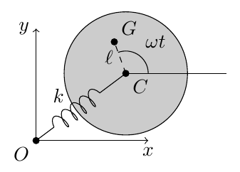
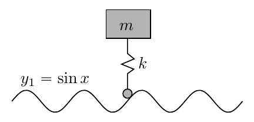

Topic 2: Point Particle Dynamics - Problem Sets
A particle of mass $m$ moves under a force $\mathbf{F} = -c x^3\mathbf{i}$, where $c$ is a positive constant. Find the potential energy function. If the particle starts from rest at $x = -a$, what is its velocity when it reaches $x = 0$? In the subsequent motion, where does it stop again?
Worked Solution (4-Phase Methodology) [ Click to Expand ]
Constraints, Degrees of Freedom & Coordinates
- System: a particle of mass $m$ moves along the $Ox$ axis under the force $\mathbf{F} = -cx^3\,\mathbf{i}$, with $c \gt 0$, a restoring force toward the origin.
- Constraints: the particle is confined to the axis, $y = z = 0$ (holonomic, bilateral, smooth). The guide exerts reactions perpendicular to $Ox$, which do not enter the motion along $x$.
- Degrees of freedom: $\text{CDOF} = 3 - 2 = 1$, with the coordinate $x(t)$.
- Initial conditions: released from rest at $x(0) = -a$ ($a \gt 0$): $\dot{x}(0) = 0$.
- Parameters: $m$ [kg]; $c$ [N/m$^3$ = kg m$^{-2}$ s$^{-2}$]; $a$ [m].
Reference Frames & Vector Bases
- Inertial frame: $\mathcal{F}_0 = \{O; \mathbf{i}, \mathbf{j}, \mathbf{k}\}$, fixed Cartesian, with $\mathbf{i}$ along the motion. The unit vectors are constant, so no basis change is needed.
Derivation
3.1 Kinematics
3.2 Forces
- Applied force: $\mathbf{F} = -cx^3\,\mathbf{i}$. Constraint forces: the reaction of the guide, perpendicular to $\mathbf{i}$. Inertia forces: none ($S_0$ is inertial).
3.3 Equations of Motion
- Newton's second law along $\mathbf{i}$: $m\ddot{x} = -cx^3$. One unknown, $x(t)$, and one equation.
- First integral. Multiplying by $\dot{x}$ and using the chain rule $\frac{d}{dt}\left(\tfrac{1}{2}\dot{x}^2\right) = \dot{x}\ddot{x}$ and $\frac{d}{dt}V(x) = V'(x)\dot{x} = cx^3\dot{x}$:
3.4 Integration and Answers
Total energy
- The energy is evaluated at the release instant ($x = -a$, $\dot{x} = 0$):
Velocity at $x = 0$
- Direction. For $x \lt 0$ the force $F_x = -cx^3 = c|x|^3 \gt 0$ points along $+\mathbf{i}$, so the particle accelerates toward the right and crosses $x = 0$ with positive velocity:
Where it stops again
The last factor is positive for real $x$, so $x_{\text{stop}} = \pm a$. Since the particle started at $-a$ and has crossed the origin moving toward $+x$, the next stop is
Interpretation & Checks
- Symmetry and anharmonic oscillation: $V(x) = \tfrac{1}{4}cx^4$ is even and convex ($V'' = 3cx^2 \ge 0$), so the particle oscillates periodically between $x = -a$ and $x = +a$.
- Dimensional check: $[ca^4] = \text{N m}^{-3}\,\text{m}^4 = \text{J}$ and $[v] = \text{m}^2\sqrt{\dfrac{\text{kg m}^{-2}\text{s}^{-2}}{\text{kg}}} = \text{m}^2\,\text{m}^{-1}\text{s}^{-1} = \text{m/s}$.
- Limit: for $a \to 0$ the release energy vanishes and $v \to 0$.
- Check against the official key:
Problems.pdfhas no entry for Problem 10 in its solution keys. The results are verified by independent derivation and by numerical integration (DOP853, $m = c = a = 1$): $|v(0)| = 0.707107\ \text{m/s} = \sqrt{1/2}$ and the successive stops are at $x = +1, -1, +1$.
The potential energy function of a particle of mass $m$ is:
where $c$ and $a$ are positive constants. Sketch this function, and describe the possible types of motion in the three cases:
-
(a)
$E > 0$
-
(b)
$E < -\frac{ca^4}{2}$
-
(c)
$-\frac{ca^4}{2} < E < 0$
Worked Solution (4-Phase Methodology) [ Click to Expand ]
Constraints, Degrees of Freedom & Coordinates
- System: a particle of mass $m$ on the $Ox$ axis with the potential energy $V(x) = -\dfrac{c}{2}\left(x^2 - a^2\right)^2$, $c \gt 0$, $a \gt 0$.
- Constraints: motion along the axis ($y = z = 0$, smooth guide); $\text{CDOF} = 1$, coordinate $x$.
- Hypotheses: the force derives from $V$, so the energy $E$ is a constant; real motion needs $T = \tfrac{1}{2}m\dot{x}^2 \ge 0$, i.e. $V(x) \le E$.
- Parameters: $c$ [J/m$^4$], $a$ [m], $E$ [J].
Reference Frames & Vector Bases
- Inertial frame: $\mathcal{F}_0 = \{O; \mathbf{i}, \mathbf{j}, \mathbf{k}\}$ with $\mathbf{i}$ along the axis (constant unit vectors).
Derivation
3.1 Kinematics
3.2 Forces
- Applied force: $F(x) = -\dfrac{dV}{dx}$ (conservative). Constraint forces: the reaction of the guide, perpendicular to $Ox$. Inertia forces: none.
- Force from the potential. The chain rule on $\left(x^2 - a^2\right)^2$ gives
3.3 Equations of Motion
- Newton's second law: $m\ddot{x} = F(x) = -V'(x)$. Multiplying by $\dot{x}$ and using the chain rule, $\frac{d}{dt}\left(\tfrac{1}{2}m\dot{x}^2 + V(x)\right) = \dot{x}\left(m\ddot{x} + V'(x)\right) = 0$:
- The turning points ($T = 0$) are the roots of $V(x) = E$, and the allowed regions are those with $V(x) \le E$.
3.4 Integration and Answers
Equilibria and sketch of the potential
- At $x = 0$: $V(0) = -\tfrac{1}{2}ca^4$ and $V''(0) = 2ca^2 \gt 0$: a local minimum (stable equilibrium).
- At $x = \pm a$: $V(\pm a) = 0$ and $V''(\pm a) = 2c\left(a^2 - 3a^2\right) = -4ca^2 \lt 0$: local maxima (unstable equilibria, potential barriers).
- Symmetry and limits: $V(-x) = V(x)$, and $V \to -\infty$ as $x \to \pm\infty$. The table of values above stands in for the requested sketch: drawn through these points, $V$ has a central well at $x = 0$, two symmetric barriers at the maxima and falls to $-\infty$ on both sides.
| $x$ | $-\infty$ | $-a$ | $0$ | $+a$ | $+\infty$ |
|---|---|---|---|---|---|
| $V(x)$ | $-\infty$ | $0$ (maximum) | $-\tfrac{1}{2}ca^4$ (minimum) | $0$ (maximum) | $-\infty$ |
The curve is even: it falls from the left maximum at $-a$ to the central minimum and rises again to the maximum at $+a$, forming a well of depth $\tfrac{1}{2}ca^4$ between two barriers of height $0$, and then falls without bound.
Case (a): $E \gt 0$
- The maximum of the potential is $V_{\max} = 0 \lt E$, so $E \gt V(x)$ for every $x$ and $V(x) = E$ has no real root (since $-\tfrac{c}{2}(x^2 - a^2)^2 \le 0 \lt E$). Then
(equality only at $x = \pm a$), so the velocity never vanishes or changes sign.
- Type of motion: unbounded. The particle moves toward $+\infty$ or toward $-\infty$ according to the sign of its velocity. A particle moving toward the origin crosses the central region and both barriers with $v \ge \sqrt{2E/m}$.
Case (b): $E \lt -\tfrac{1}{2}ca^4$
- The energy is below the bottom of the well, $E \lt V(0)$. For $|x| \le a$ the potential satisfies $V \ge V(0) \gt E$, so $T \lt 0$ there: the central region is forbidden.
- Turning points. $V(x) = E$ means $\left(x^2 - a^2\right)^2 = -\dfrac{2E}{c} = \dfrac{2|E|}{c}$. Taking the square root, $x^2 - a^2 = \pm\sqrt{2|E|/c}$. The root with the minus sign gives $x^2 = a^2 - \sqrt{2|E|/c} \lt 0$ (because $|E| \gt \tfrac{1}{2}ca^4$ implies $\sqrt{2|E|/c} \gt a^2$), which has no real $x$, so only the plus sign remains:
- Allowed regions: $x \le -x_{\text{out}}$ and $x \ge +x_{\text{out}}$.
- Type of motion: unbounded. A particle in the right region that moves toward $+\infty$ simply goes to $+\infty$. If it moves toward the origin it decelerates, stops at $+x_{\text{out}}$ and is pushed back by the force $F = -V'(x_{\text{out}}) \gt 0$ to $+\infty$ (reflection). The left region is symmetric.
Case (c): $-\tfrac{1}{2}ca^4 \lt E \lt 0$
- The energy lies between the well bottom and the barrier tops: $V(0) \lt E \lt V(\pm a)$. The roots of $V = E$ are
so both values of $x^2$ are positive: four turning points $\pm x_{\text{in}}$ and $\pm x_{\text{out}}$, with $x_{\text{in}} = \sqrt{a^2 - \sqrt{2|E|/c}} \in (0, a)$ and $x_{\text{out}} = \sqrt{a^2 + \sqrt{2|E|/c}} \gt a$, ordered $-x_{\text{out}} \lt -x_{\text{in}} \lt 0 \lt x_{\text{in}} \lt x_{\text{out}}$.
- Allowed regions ($V \le E$): the inner well $[-x_{\text{in}}, +x_{\text{in}}]$ and the two outer regions $|x| \ge x_{\text{out}}$.
- Types of motion. In the well, the particle is confined and oscillates periodically between $-x_{\text{in}}$ and $+x_{\text{in}}$ around the stable equilibrium $x = 0$. In an outer region it behaves as in case (b): it moves directly toward $\pm\infty$ or is reflected at $\pm x_{\text{out}}$ back to $\pm\infty$.
Interpretation & Checks
- Summary:
| Energy range | Turning points | Allowed regions | Motion |
|---|---|---|---|
| (a) $E \gt 0$ | none | all of $\mathbb{R}$ | unbounded, goes to $\pm\infty$ |
| (b) $E \lt -\tfrac{1}{2}ca^4$ | $\pm x_{\text{out}}$ | $x \le -x_{\text{out}}$ or $x \ge x_{\text{out}}$ | unbounded, directly or reflected |
| (c) $-\tfrac{1}{2}ca^4 \lt E \lt 0$ | $\pm x_{\text{in}}$, $\pm x_{\text{out}}$ | $[-x_{\text{in}}, x_{\text{in}}]$ or $\vert x\vert \ge x_{\text{out}}$ | oscillation in the well, or unbounded (directly or reflected) |
- Limiting energies: for $E \to -\tfrac{1}{2}ca^4$ (bottom of the well), $x_{\text{in}} \to 0$ and $x_{\text{out}}^2 \to 2a^2$: the well collapses to the stable point, whose small oscillations have $\omega^2 = V''(0)/m = 2ca^2/m$. For $E \to 0^-$, $x_{\text{in}}, x_{\text{out}} \to a$: the turning points merge at the unstable equilibria $\pm a$ (separatrix between (c) and (a)).
- Dimensional check: $[ca^4] = (\text{J/m}^4)\,\text{m}^4 = \text{J}$, like $E$; $[2|E|/c] = \text{m}^4$, so $\sqrt{2|E|/c}$ is an area and $x_{\text{out}}$ is a length.
- Check against the official key: the key of
Problems.pdfis qualitative: (a) the particle moves toward $+\infty$ or $-\infty$; (b) toward $\pm\infty$ directly or after being reflected; (c) toward $\pm\infty$ directly, reflected, or oscillating. This agrees with the classification above. Sympy confirms $V'$, $V''(0)$, $V''(\pm a)$ and the turning points $x^2 = a^2 \pm \sqrt{2|E|/c}$.
A particle moving under a conservative force oscillates between $x_1$ and $x_2$. Show that the period of oscillation is:
where $V(x)$ is the potential energy function. In particular, if $V(x) = \frac{1}{2}m\omega_0^2(x^2 - bx^4)$, show that the period for oscillations of amplitude $a$ is:
Worked Solution (4-Phase Methodology) [ Click to Expand ]
Constraints, Degrees of Freedom & Coordinates
- System: a particle of mass $m$ moves on the $Ox$ axis under a conservative force with potential $V(x)$ and oscillates between two turning points $x_1 \lt x_2$.
- Constraints: motion along the axis ($y = z = 0$, smooth guide); $\text{CDOF} = 1$, coordinate $x$.
- Hypotheses: $E = V(x_1) = V(x_2)$, $V(x) \lt E$ for $x_1 \lt x \lt x_2$, and the turning points are simple: $V'(x_1) \ne 0$ and $V'(x_2) \ne 0$. In the particular case, $V(x) = \tfrac{1}{2}m\omega_0^2\left(x^2 - bx^4\right)$ and the amplitude is $a$ ($x_1 = -a$, $x_2 = +a$).
- Parameters: $\omega_0$ [rad/s], the small-amplitude frequency; $b$ [m$^{-2}$], the anharmonicity.
Reference Frames & Vector Bases
- Inertial frame: $\mathcal{F}_0 = \{O; \mathbf{i}, \mathbf{j}, \mathbf{k}\}$ with $\mathbf{i}$ along the axis (constant unit vectors).
Derivation
3.1 Kinematics
3.2 Forces
- Applied force: $F = -V'(x)$ (conservative). Constraint forces: perpendicular to the axis. Inertia forces: none.
3.3 Equations of Motion
- Newton's second law: $m\ddot{x} = -V'(x)$. Multiplying by $\dot{x}$, the energy is a first integral:
3.4 Integration and Answers
(a) General formula for the period
- On the way back the velocity is negative, $\dot{x} = -\sqrt{\tfrac{2}{m}\left[E - V(x)\right]}$, and $x$ goes from $x_2$ to $x_1$. Reversing the limits cancels the minus sign:
so the return trip takes the same time (the motion is symmetric under time reversal) and the period is twice the one-way time. Using $E = V(x_2)$:
- Convergence. The integrand is singular at the end points, where $V(x_2) - V(x) \to 0$. At a simple turning point, $V(x_2) - V(x) \approx -V'(x_2)(x - x_2)$ with $V'(x_2) \ne 0$, so the integrand behaves as $(x_2 - x)^{-1/2}$. Its antiderivative is $-2(x_2 - x)^{1/2}$, which is finite at $x_2$, so by Barrow's rule the integral converges (and the same at $x_1$).
(b) Application to $V = \tfrac{1}{2}m\omega_0^2\left(x^2 - bx^4\right)$
- The factor under the root of the general formula is
Interpretation & Checks
- Harmonic limit ($b \to 0$): the integral is $\int_{-a}^a\frac{dx}{\sqrt{a^2 - x^2}}$. With $x = a\sin\varphi$, $dx = a\cos\varphi\,d\varphi$, limits $\varphi \in [-\pi/2, \pi/2]$ (where $\cos\varphi \ge 0$, so $\sqrt{a^2 - x^2} = a\cos\varphi$) and Barrow's rule:
the isochronous harmonic period, independent of the amplitude.
- Softening ($b \gt 0$): the factor $\sqrt{1 - b\left(a^2 + x^2\right)} \lt 1$ makes the integrand larger than in the harmonic case, so $\tau \gt 2\pi/\omega_0$. In the form with $x = a\sin\varphi$ (next item) the integrand $1/\sqrt{1 - ba^2\left(1 + \sin^2\varphi\right)}$ increases with $a$ for every $\varphi$, so the period grows with the amplitude. For $b \lt 0$ (hardening) the factor is larger than $1$, $\tau \lt 2\pi/\omega_0$, and every amplitude gives a bounded oscillation.
- Small anharmonicity: with $x = a\sin\varphi$ the period reads $\tau = \dfrac{2}{\omega_0}\displaystyle\int_{-\pi/2}^{\pi/2}\frac{d\varphi}{\sqrt{1 - ba^2\left(1 + \sin^2\varphi\right)}}$. Expanding to first order in $ba^2$ ($\left(1 - \epsilon\right)^{-1/2} \approx 1 + \epsilon/2$) and using $\int_{-\pi/2}^{\pi/2}\sin^2\varphi\,d\varphi = \left[\dfrac{\varphi}{2} - \dfrac{\sin 2\varphi}{4}\right]_{-\pi/2}^{\pi/2} = \left(\dfrac{\pi}{4} - \dfrac{\sin\pi}{4}\right) - \left(-\dfrac{\pi}{4} - \dfrac{\sin(-\pi)}{4}\right) = \dfrac{\pi}{2}$, together with $\int_{-\pi/2}^{\pi/2}d\varphi = \left[\varphi\right]_{-\pi/2}^{\pi/2} = \pi$ for the constant term:
- Admissible amplitudes ($b \gt 0$): $V' = m\omega_0^2\left(x - 2bx^3\right) = 0$ gives $x^2 = 1/(2b)$, where $V$ has its maximum, so bounded oscillations require $a^2 \lt 1/(2b)$; as $a^2 \to 1/(2b)$ the factor $1 - b\left(a^2 + x^2\right)$ vanishes at the turning points and $\tau \to \infty$.
- Dimensional check: $[b] = \text{m}^{-2}$, so $b\left(a^2 + x^2\right)$ is dimensionless; $\int dx/\sqrt{a^2 - x^2}$ is dimensionless and $[\tau] = 1/[\omega_0] = \text{s}$.
- Check against the official key: the key of
Problems.pdfonly gives the hint to separate variables (the period formula is part of the statement). The result is verified numerically ($\omega_0 = b = 1$; quadrature against DOP853 integration of $\ddot{x} = -x + 2bx^3$):
| Amplitude $a$ | Quadrature | ODE | First-order estimate |
|---|---|---|---|
| $0.1$ | $6.3309$ | $6.3309$ | $6.3303$ |
| $0.3$ | $6.7592$ | $6.7592$ | $6.7073$ |
| $0.5$ | $8.0086$ | $8.0086$ | $7.4613$ |
| $0.7$ | $16.9473$ | $16.9473$ | $8.5923$ (outside its range of validity) |
A particle of mass $m$ moves along the $Ox$ axis under the potential:
Compute the evolution of the particle as a function of time, when it is released from $x_0 = a$ with an initial velocity $v_0 = \sqrt{8ga}$ directed along the positive $Ox$ axis.
(Tip: $\int \frac{dx}{(x+1)\sqrt{2-x}} = -\frac{2}{\sqrt{3}}\text{arctanh}\left(\sqrt{\frac{2-x}{3}}\right)$).
Worked Solution (4-Phase Methodology) [ Click to Expand ]
Constraints, Degrees of Freedom & Coordinates
- System: a particle of mass $m$ on the $Ox$ axis with the potential $V(x) = mgx\left[\left(x/a\right)^2 - 3\right]$, released from $x_0 = a$ with $v_0 = +\sqrt{8ga}$.
- Constraints: motion along the axis (smooth guide); $\text{CDOF} = 1$, coordinate $x$. The dimensionless coordinate $y = x/a$ simplifies the algebra.
- Parameters: $m$ [kg], $g$ [m/s$^2$], $a$ [m]. The statement gives the integral $\displaystyle\int\frac{dx}{(x + 1)\sqrt{2 - x}} = -\frac{2}{\sqrt{3}}\operatorname{arctanh}\left(\frac{\sqrt{2 - x}}{\sqrt{3}}\right)$.
Reference Frames & Vector Bases
- Inertial frame: $\mathcal{F}_0 = \{O; \mathbf{i}, \mathbf{j}, \mathbf{k}\}$ with $\mathbf{i}$ along the axis.
Derivation
3.1 Kinematics
3.2 Forces
- Applied force: $F = -V'(x)$ (conservative); constraint forces perpendicular to $Ox$; inertia forces: none.
- $y = +1$ ($x = a$): $V = -2mga$, $V'' = +6mga \gt 0$: local minimum (stable). $y = -1$ ($x = -a$): $V = +2mga$, $V'' = -6mga \lt 0$: local maximum (unstable).
- The force follows from the chain rule, $F = -\dfrac{dV}{dx} = -\dfrac{1}{a}\dfrac{dV}{dy} = -3mg\left(y^2 - 1\right)$ (units of force: $[mg] = \text{N}$).
3.3 Equations of Motion
- Newton's second law: $ma\ddot{y} = -3mg\left(y^2 - 1\right)$, i.e. $\ddot{y} = -\dfrac{3g}{a}\left(y^2 - 1\right)$ (one unknown, one equation). The energy is a first integral, as in Problem 12.
- Total energy from the initial state $y = 1$, $\dot{x} = \sqrt{8ga}$:
It equals the height of the barrier, $V(-a) = +2mga$: the initial energy is exactly the separatrix energy.
3.4 Integration and Answers
Quadrature
- Factorisation. $y = -1$ is a root of $y^3 - 3y - 2$ ($-1 + 3 - 2 = 0$). Dividing by $(y + 1)$ (check: $(y + 1)(y^2 - y - 2) = y^3 - y^2 - 2y + y^2 - y - 2 = y^3 - 3y - 2$): $y^3 - 3y - 2 = (y + 1)\left(y^2 - y - 2\right) = (y + 1)(y + 1)(y - 2)$. Therefore
Stage 1: from $y = 1$ to the turning point $y = 2$ ($0 \le t \le t_1$)
- With the integral of the statement, $\left[-\dfrac{2}{\sqrt{3}}\operatorname{arctanh}\sqrt{\dfrac{2 - y'}{3}}\right]_1^y$, and the lower limit $\sqrt{(2 - 1)/3} = 1/\sqrt{3}$:
Multiplying by $-\sqrt{3}/2$, with $\dfrac{\sqrt{3}}{2}\sqrt{\dfrac{2g}{a}} = \sqrt{\dfrac{3g}{2a}}$:
- Turning point. The velocity vanishes when $2 - y = 0$, i.e. $x = 2a$, where $\operatorname{arctanh}(0) = 0$:
Stage 2: return motion ($t \gt t_1$)
- Since $\sqrt{3g/(2a)}\,t_1 = \operatorname{arctanh}\left(1/\sqrt{3}\right)$:
Position as a function of time
At $t = 0$, $\tanh\left(-\operatorname{arctanh}(1/\sqrt{3})\right) = -1/\sqrt{3}$ and $x(0) = a\left(2 - 3\cdot\tfrac{1}{3}\right) = a$; at $t = t_1$, $x = 2a$; and as $t \to \infty$, $\tanh^2 \to 1$ and $x \to -a$.
Interpretation & Checks
- Asymptotic behaviour ($t \to \infty$): the right-hand side of the Stage 2 equation grows without bound, and $\operatorname{arctanh}(u) \to +\infty$ only as $u \to 1^-$. So $\sqrt{(2 - y)/3} \to 1$, i.e. $2 - y \to 3$ and $y \to -1$: the particle approaches the unstable maximum $x = -a$ asymptotically in infinite time and never crosses it. This follows from $E = V(-a)$ (separatrix).
- Return through the well: at $x = a$ the speed is again $\sqrt{\tfrac{2}{m}\left[E - V(a)\right]} = \sqrt{\tfrac{2}{m}\left[2mga + 2mga\right]} = \sqrt{8ga}$.
- Dimensional check: $[\dot{y}^2] = [2g/a] = \text{s}^{-2}$, the argument of $\operatorname{arctanh}$ is dimensionless, and $[t_1] = \sqrt{[a]/[g]} = \text{s}$.
- Check against the official key: the key of
Problems.pdfgives exactly the two branches above, $\operatorname{arctanh}\sqrt{(2 - y)/3} = -\sqrt{3g/(2a)}\,t + \operatorname{arctanh}(1/\sqrt{3})$ for $0 \lt t \lt t_1$ and its mirror for $t \gt t_1$, and the initial speed $\sqrt{8ga}$ (which it calls the terminal velocity). Numerical integration of $\ddot{y} = -(3g/a)\left(y^2 - 1\right)$ with $g = a = 1$ reproduces the closed form to $10^{-8}$ ($y(0.3) = 1.759553$, turning point $y = 2$ at $t_1 = 0.537646$, $y(2) = -0.683994$).
A particle of mass $m$ is moving along the $Ox$ axis under the force $\mathbf{F}(x) = mK x e^{x/a}\mathbf{i}$, where $K$ and $a$ are known positive constants. The initial position of the particle is $x = a$ and the initial velocity is $\mathbf{v} = -v_0\mathbf{i}$. Describe the possible types of motion of the particle as a function of $v_0$.
Worked Solution (4-Phase Methodology) [ Click to Expand ]
Constraints, Degrees of Freedom & Coordinates
- System: a particle of mass $m$ on the $Ox$ axis under $\mathbf{F}(x) = mKxe^{x/a}\,\mathbf{i}$ ($K \gt 0$, $a \gt 0$), starting at $x(0) = a$ with $\dot{x}(0) = -v_0$ ($v_0 \gt 0$).
- Constraints: motion along the axis (smooth guide); $\text{CDOF} = 1$, coordinate $x$.
- Parameters: $m$ [kg], $K$ [s$^{-2}$], $a$ [m], $v_0$ [m/s].
Reference Frames & Vector Bases
- Inertial frame: $\mathcal{F}_0 = \{O; \mathbf{i}, \mathbf{j}, \mathbf{k}\}$ with $\mathbf{i}$ along the axis.
Derivation
3.1 Kinematics
3.2 Forces
- Applied force: $\mathbf{F}(x) = mKxe^{x/a}\,\mathbf{i}$, which depends only on $x$ and is therefore conservative. Constraint forces: perpendicular to $Ox$. Inertia forces: none.
- Potential by integration by parts. $V(x) = -\int F\,dx = -mK\int xe^{x/a}\,dx$. With $u = x$, $du = dx$, $dv = e^{x/a}dx$, $v = ae^{x/a}$, and $\int u\,dv = uv - \int v\,du$:
- Landscape. $\dfrac{dV}{dx} = -F = -mKxe^{x/a}$ vanishes only at $x = 0$. The second derivative, with the product rule, is $\dfrac{d^2V}{dx^2} = -mKe^{x/a}\left(1 + \dfrac{x}{a}\right)$, so $V''(0) = -mK \lt 0$: a local maximum with $V(0) = mKa^2$ (barrier). Also $V(-\infty) = 0$ (since $e^{x/a} \to 0$) and $V \to -\infty$ as $x \to +\infty$.
3.3 Equations of Motion
- Newton's second law: $m\ddot{x} = mKxe^{x/a}$. The energy is a first integral: $E = \tfrac{1}{2}m\dot{x}^2 + V(x)$. At $t = 0$, $V(a) = 0$, so
3.4 Integration and Answers
Critical velocity
Classification of the motion
- Regime 1, $v_0 \lt a\sqrt{2K}$ ($E \lt V(0)$). The kinetic energy is not enough to overcome the barrier: $V$ is strictly decreasing on $(0, a)$ ($V' = -mKxe^{x/a} \lt 0$) from $V(0) = mKa^2 \gt E$ down to $V(a) = 0 \lt E$ (since $v_0 \gt 0$), so there is exactly one point $x_{\text{turn}} \in (0, a)$ with $V(x_{\text{turn}}) = E$. For $x \gt 0$ the force is positive, $F = mKxe^{x/a} \gt 0$, so the particle decelerates while approaching the origin, stops at a turning point $x_{\text{turn}} \in (0, a)$ where $V(x_{\text{turn}}) = E$, and is accelerated back toward $+x$ ($F(x_{\text{turn}}) \gt 0$). It passes $x = a$ and moves toward $+\infty$.
- Regime 2, $v_0 = a\sqrt{2K}$ ($E = V(0)$). The energy equals the barrier height. Near $x = 0$, $V(x) \approx V(0) + V'(0)x + \tfrac{1}{2}V''(0)x^2 = mKa^2 - \tfrac{1}{2}mKx^2$, so with $E = V(0)$:
Separating variables, the time to go from a point $x_1$ already close to the origin (where the quadratic approximation holds) to a point $x$ nearer still follows from Barrow's rule, measuring $t$ from the instant at $x_1$: $\int_{x_1}^{x}\dfrac{dx'}{x'} = -\sqrt{K}\int_0^tdt'$, i.e. $\left[\ln x'\right]_{x_1}^{x} = \ln\dfrac{x}{x_1} = -\sqrt{K}\,t$, i.e. $t = \dfrac{1}{\sqrt{K}}\ln\dfrac{x_1}{x}$, which diverges as $x \to 0$. The particle needs infinite time to reach $x = 0$ (it approaches it asymptotically; the barrier top is an unstable equilibrium).
- Regime 3, $v_0 \gt a\sqrt{2K}$ ($E \gt V(0)$). The particle reaches $x = 0$ with the speed $\sqrt{\tfrac{2}{m}\left[E - V(0)\right]} = \sqrt{v_0^2 - 2Ka^2} \gt 0$. For $x \lt 0$ the force $F = mKxe^{x/a}$ is negative, so it keeps accelerating toward $-x$ and goes to $-\infty$ (as $x \to -\infty$, $V \to 0$ and the speed tends to $v_0$, the speed it had at $x = a$ because $V(a) = 0$ too).
Interpretation & Checks
- Dimensional check: $[v_{0,\text{crit}}] = [a]\sqrt{[K]} = \text{m}\cdot\text{s}^{-1}$; $[mKa^2] = \text{kg s}^{-2}\text{m}^2 = \text{J}$, like $\tfrac{1}{2}mv_0^2$.
- Limits: for $K \to 0$ the force vanishes, $v_{0,\text{crit}} \to 0$ and every $v_0 \gt 0$ crosses the origin (free particle); for $v_0 \gg a\sqrt{2K}$ the barrier is negligible and $v(0) \to v_0$.
- Check against the official key: the key of
Problems.pdfstates: (written there as $a\sqrt{2k}$, with $k$ the constant $K$ of the statement) if $v_0 \gt a\sqrt{2K}$ the particle moves toward $-\infty$; if $v_0 \lt a\sqrt{2K}$ it moves toward $+\infty$ after decelerating before $x = 0$; if $v_0 = a\sqrt{2K}$ it takes infinite time to reach $x = 0$. These are the three regimes above. - Computational check (extension, not a course tool) (DOP853, $m = K = a = 1$, $v_{0,\text{crit}} = 1.41421$): for $v_0 = 1.2$ the particle turns at $x = 0.60801$ (the root of $-e^x(x - 1) = 0.72$ is $0.608007$) and returns to $+\infty$; for $v_0 = 1.6$ it crosses the origin; for $v_0 = 0.999999\,v_{0,\text{crit}}$ it turns at $x = 0.002$ very close to the top of the barrier.
The Stokes' law states that the magnitude of the drag force acting on a sphere of radius $r$ and velocity $v$ moving on a fluid at rest of dynamic viscosity $\mu$ is: $F(v) = 6\pi\mu rv$. Assuming the density of a vertically-falling sphere is twice the density of the fluid ($\rho_0$), and considering drag, the weight, and the buoyancy of the sphere, compute:
-
(a)
The terminal velocity of the sphere.
-
(b)
The evolution of the position as a function of time, if the sphere starts from rest.
Remember that the kinematic viscosity is defined as $\nu = \mu / \rho_0$.
Worked Solution (4-Phase Methodology) [ Click to Expand ]
Constraints, Degrees of Freedom & Coordinates
- System: a sphere of radius $r$ and density $\rho_s = 2\rho_0$ falls vertically from rest in a fluid at rest of density $\rho_0$ and dynamic viscosity $\mu$. The forces are the weight, the buoyancy and the Stokes drag $F_D = 6\pi\mu rv$ (as the statement says; unsteady and added-mass effects are not considered).
- Constraints: the motion is vertical (the sphere does not rotate or drift sideways); $\text{CDOF} = 1$, with the coordinate $x$ measured downward from the release point.
- Initial conditions: $x(0) = 0$, $\dot{x}(0) = 0$.
- Relations: volume $V = \tfrac{4}{3}\pi r^3$; mass $m = \rho_sV = \tfrac{8}{3}\pi\rho_0r^3$; kinematic viscosity $\nu = \mu/\rho_0$, so $\mu = \rho_0\nu$.
Reference Frames & Vector Bases
- Inertial frame: $\mathcal{F}_0$ fixed to the fluid, with $Ox$ pointing downward along gravity ($\mathbf{i}$ downward); constant unit vectors.
Derivation
3.1 Kinematics
3.2 Forces
- Net weight corrected by buoyancy: $W - F_B = \tfrac{4}{3}\pi\rho_0r^3g = \tfrac{1}{2}mg$. Inertia forces: none.
3.3 Equations of Motion
- Newton's second law along $Ox$: $m\ddot{x} = W - F_B - F_D$:
Dividing by $\tfrac{8}{3}\pi\rho_0r^3$: the first term gives $\dfrac{4/3}{8/3}g = \dfrac{g}{2}$ and the second $\dfrac{6\pi\rho_0\nu r}{(8/3)\pi\rho_0r^3} = 6\cdot\dfrac{3}{8}\cdot\dfrac{\nu}{r^2} = \dfrac{9\nu}{4r^2}$, so
- One unknown, $x(t)$, and one linear equation with constant coefficients.
3.4 Integration and Answers
(a) Terminal velocity
(b) Position as a function of time
- Velocity. Let $\gamma = \dfrac{9\nu}{4r^2}$ ($[\gamma] = \text{s}^{-1}$). Then $\dot{v} + \gamma v = \dfrac{g}{2} = \gamma v_t$, i.e. $\dfrac{dv}{v - v_t} = -\gamma\,dt$. Integrating from $v(0) = 0$ with the substitution $w = v' - v_t$, $dw = dv'$, whose antiderivative is $\int dw/w = \ln|w|$ (Barrow):
(the absolute value is removed because $v \lt v_t$: the net force $m\gamma(v_t - v)$ is positive while $v \lt v_t$, so $v$ increases from $0$, and it cannot reach $v_t$ in finite time because $v \equiv v_t$ is itself a solution and the solutions of this linear equation are unique). Exponentiating, $1 - v/v_t = e^{-\gamma t}$:
so $\dot{x} \gt 0$ at all times and the drag indeed points upward, as assumed in 3.2.
- Position. Integrating the velocity with $x(0) = 0$:
With $u = -\gamma t'$, $du = -\gamma\,dt'$, the antiderivative is $\int e^{-\gamma t'}dt' = -\frac{1}{\gamma}\int e^u\,du = -\frac{1}{\gamma}e^{-\gamma t'}$, so
- Substituting $\dfrac{v_t}{\gamma} = \dfrac{2r^2g}{9\nu}\cdot\dfrac{4r^2}{9\nu} = \dfrac{8r^4g}{81\nu^2}$ and $\gamma = \dfrac{9\nu}{4r^2}$, and writing $\dfrac{8r^4g}{81\nu^2} = \dfrac{2r^2g}{81\nu^2}\cdot 4r^2$ so that $4r^2$ multiplies the bracket (with $4r^2\cdot\gamma t = 4r^2\cdot\frac{9\nu}{4r^2}t = 9\nu t$):
Interpretation & Checks
- Short times ($t \ll \gamma^{-1}$): with $e^{-\gamma t} \approx 1 - \gamma t + \tfrac{1}{2}\gamma^2t^2$, $x \approx \dfrac{v_t}{\gamma}\cdot\dfrac{1}{2}\gamma^2t^2 = \tfrac{1}{2}(\gamma v_t)t^2 = \tfrac{1}{4}gt^2$: free fall under the effective gravity $g\left(1 - \rho_0/\rho_s\right) = g/2$.
- Long times ($t \gg \gamma^{-1}$): $x \approx v_tt - v_t/\gamma$, uniform descent at $v_t$ with an offset $v_t/\gamma$.
- Dimensional check: $[v_t] = \dfrac{\text{m}^2\cdot\text{m s}^{-2}}{\text{m}^2\text{s}^{-1}} = \text{m/s}$ and $[\gamma] = \text{m}^2\text{s}^{-1}/\text{m}^2 = \text{s}^{-1}$.
- Check against the official key: the key of
Problems.pdfgives the equation of motion $4r^2\ddot{x} + 9\nu\dot{x} = 2r^2g$ (with $x$ positive downward, initial conditions $x(0) = \dot{x}(0) = 0$) and $x = \frac{2r^2g}{81\nu^2}\left[-4r^2 + 4r^2\exp\left(-\frac{9\nu}{4r^2}t\right) + 9\nu t\right]$. Both are identical to the results above. Numerical integration (DOP853, $g = r = \nu = 1$) gives $x(2) = 0.3467762$, equal to the closed form.
A football has frontal surface area $S$, mass $m$, and a drag coefficient $C_D$. It falls vertically through the air of density $\rho$. It is assumed that the forces acting on the ball are only gravity and drag. The drag can be modeled as: $D = \frac{1}{2}\rho v^2 S C_D$, with $v$ the speed of the ball. Compute its terminal speed and its position as a function of time.
You may find the following integrals useful:
Worked Solution (4-Phase Methodology) [ Click to Expand ]
Constraints, Degrees of Freedom & Coordinates
- System: a football of mass $m$, frontal area $S$ and drag coefficient $C_D$ falls vertically through air of density $\rho$. Only gravity and the quadratic drag $D = \tfrac{1}{2}\rho v^2SC_D$ act.
- Constraints: vertical motion; $\text{CDOF} = 1$, with the coordinate $s$ measured downward from the release point.
- Initial conditions: $s(0) = 0$, $v(0) = 0$. The statement gives $\displaystyle\int\frac{dx}{x_0^2 - x^2} = \frac{1}{x_0}\operatorname{atanh}\frac{x}{x_0}$ and $\int\tanh x\,dx = \ln\cosh x$.
Reference Frames & Vector Bases
- Inertial frame: fixed to the air, with $Os$ pointing vertically downward.
Derivation
3.1 Kinematics
3.2 Forces
- Weight: $mg$ downward. Drag: $D = \tfrac{1}{2}\rho v^2SC_D$, upward because it opposes the downward velocity ($v \gt 0$). Inertia forces: none.
3.3 Equations of Motion
- Newton's second law:
One unknown, $v(t)$ (and then $s(t)$ by integration), and one first-order equation.
3.4 Integration and Answers
Terminal velocity
Velocity as a function of time
- Integrating from $v = 0$ at $t = 0$ (Barrow, with $\operatorname{atanh}0 = 0$):
The speed increases from $0$ (the net force is positive while $v \lt v_t$) and cannot reach $v_t$ in finite time, because $v \equiv v_t$ is a solution (the terminal state) and solutions are unique; so $\left|v/v_t\right| \lt 1$ and $\operatorname{atanh}(v/v_t)$ is defined for all $t$; consistently, $\tanh \lt 1$.
Position as a function of time
Interpretation & Checks
- Early times ($t \ll v_t/g$): $\tanh u \approx u$ gives $v \approx gt$; and $\cosh u \approx 1 + u^2/2$, $\ln\cosh u \approx u^2/2$ give $s \approx \tfrac{1}{2}gt^2$: free fall, the drag is negligible.
- Late times ($t \gg v_t/g$): $\tanh u \to 1$, so $v \to v_t$; and $\cosh u \approx \tfrac{1}{2}e^u$ gives $\ln\cosh u \approx u - \ln 2$, so $s \approx v_tt - \dfrac{v_t^2}{g}\ln 2$: uniform descent with a constant delay.
- Dimensional check: $[v_t] = \sqrt{\dfrac{\text{kg m s}^{-2}}{\text{kg m}^{-3}\text{m}^2}} = \text{m/s}$; $gt/v_t$ is dimensionless; $[v_t^2/g] = \text{m}$.
- Check against the official key: the key of
Problems.pdfgives the terminal velocity $v_t = \sqrt{2mg/(\rho SC_D)}$, $v(t) = v_t\tanh\left(\frac{g}{v_t}t\right)$ and $s(t) = \frac{v_t^2}{g}\ln\left[\cosh\left(\frac{g}{v_t}t\right)\right]$, identical to the results above. Numerical integration of $\dot{v} = 1 - v^2$, $\dot{s} = v$ (units $g = v_t = 1$) up to $t = 1$ gives $v = 0.761594 = \tanh 1$ and $s = 0.433781 = \ln\cosh 1$.
A force attracts a heavy particle $M$ of mass $m$ to a point $O$. The attractive force is proportional to the mass of the particle and to the distance $OM$. The proportionality coefficient is $k^2$. The coordinate system $Oxyz$ has the origin at the centre of attraction $O$ and the axis $Oz$ is vertically oriented. Initially, the coordinates of $M$ are:
and its initial velocity is:
-
(a)
Describe the motion of $M$, specifying clearly the shape of the path.
-
(b)
What is the velocity of the particle as a function of $t$?
Worked Solution (4-Phase Methodology) [ Click to Expand ]
Constraints, Degrees of Freedom & Coordinates
- System: a heavy particle $M$ of mass $m$ is attracted to the fixed point $O$ by a force proportional to its mass and to the distance, with coefficient $k^2$: $\mathbf{F}_c = -mk^2\mathbf{r}$. The axis $Oz$ is vertical (upward) and gravity acts along $-Oz$.
- Constraints: none; the particle is free in space, so $\text{CDOF} = 3$, with the Cartesian coordinates $(x, y, z)$.
- Initial state: $(x_0, y_0, z_0) = \left(\sqrt{3}g/k^2,\ 0,\ 0\right)$ and $(\dot{x}_0, \dot{y}_0, \dot{z}_0) = \left(0,\ 2g/k,\ 0\right)$.
- Parameters: $m$ [kg], $g$ [m/s$^2$], $k$ [s$^{-1}$].
Reference Frames & Vector Bases
- Inertial frame: $\mathcal{F}_0 = \{O; \mathbf{i}, \mathbf{j}, \mathbf{k}\}$ with its origin at the centre of attraction and $\mathbf{k}$ vertical upward (constant unit vectors).
Derivation
3.1 Kinematics
3.2 Forces
- Applied forces: the linear central attraction $\mathbf{F}_c = -mk^2\mathbf{r}$ and the weight $\mathbf{F}_g = -mg\,\mathbf{k}$. Constraint forces: none. Inertia forces: none.
3.3 Equations of Motion
- Newton's second law in $S_0$: $m\ddot{\mathbf{r}} = -mk^2\mathbf{r} - mg\,\mathbf{k}$.
3.4 Integration and Answers
Integration of each component
- $x$ and $y$ (homogeneous oscillators): the equation $\ddot{x} + k^2x = 0$ is linear with constant coefficients and its characteristic equation $r^2 + k^2 = 0$ has the roots $\pm ik$ (the characteristic-equation method of Notes Eq. 5.20, Sec. 5.3), so the general solution is $A\cos kt + B\sin kt$ (Notes Sec. 5.1, Eq. 5.7). Its velocity follows from the chain rule, $\frac{d}{dt}\cos kt = -k\sin kt$ and $\frac{d}{dt}\sin kt = k\cos kt$: $\dot{x} = -kA\sin kt + kB\cos kt$. The initial conditions give
- $z$ (forced by gravity): a particular solution of $\ddot{z} + k^2z = -g$ is the constant $z_p = -g/k^2$, so $z(t) = -\dfrac{g}{k^2} + A_z\cos kt + B_z\sin kt$. The initial conditions give $z(0) = -\dfrac{g}{k^2} + A_z = 0$, so $A_z = \dfrac{g}{k^2}$, and $\dot{z}(0) = kB_z = 0$:
- Trajectory: $\displaystyle\mathbf{r}(t) = \frac{\sqrt{3}g}{k^2}\cos kt\,\mathbf{i} + \frac{2g}{k^2}\sin kt\,\mathbf{j} + \frac{g}{k^2}\left(\cos kt - 1\right)\mathbf{k}$.
(a) Shape of the path
- Plane. From $x = \frac{\sqrt{3}g}{k^2}\cos kt$ we have $\cos kt = \frac{k^2}{\sqrt{3}g}x$, so $z = \frac{g}{k^2}\cos kt - \frac{g}{k^2} = \frac{x}{\sqrt{3}} - \frac{g}{k^2}$, i.e.
- Sphere. The squared distance to the point $C = \left(0, 0, -g/k^2\right)$ is
a sphere of centre $C$ and radius $R = 2g/k^2$.
- Circle. The centre $C$ lies on the plane: $0 - \sqrt{3}\left(-g/k^2\right) = \sqrt{3}g/k^2$. The intersection of a sphere with a plane through its centre is a great circle of radius $R = 2g/k^2$.
(b) Velocity as a function of time
- Differentiating each component with the chain rule:
- Modulus: $\|\mathbf{v}\|^2 = \dfrac{g^2}{k^2}\left[3\sin^2kt + 4\cos^2kt + \sin^2kt\right] = \dfrac{g^2}{k^2}\cdot 4\left(\sin^2kt + \cos^2kt\right) = \dfrac{4g^2}{k^2}$, so $\|\mathbf{v}\| = \dfrac{2g}{k}$: the speed is constant.
Interpretation & Checks
- Uniform circular motion: the particle describes a great circle of radius $R = 2g/k^2$ at constant speed $v = 2g/k$, with angular frequency $\omega = v/R = k$.
- Shifted centre: the linear central force plus the uniform gravity is equivalent to a spring centred at the equilibrium point $C$ where $k^2z_{\text{eq}} = -g$, i.e. $z_{\text{eq}} = -g/k^2$.
- Consistency: the centripetal acceleration $v^2/R = (4g^2/k^2)/(2g/k^2) = 2g$ equals the effective spring acceleration $k^2R = 2g$.
- Role of $k$: the initial data are themselves multiples of $g/k^2$ ($x_0 = \sqrt{3}\,g/k^2$, $\dot{y}_0 = 2g/k$), so the solution is self-similar: $R$, $|z_{\text{eq}}|$ and $x_0$ all scale with $g/k^2$, the angular frequency is $k$, and the geometry (offset over radius $|z_{\text{eq}}|/R = 1/2$, tilt of the plane, ratio $1/2$ of gravity to central force on the orbit) does not depend on $k$. A larger $k$ only shrinks the same orbit; gravity never becomes negligible for these data.
- Dimensional check: $[g/k^2] = \dfrac{\text{m s}^{-2}}{\text{s}^{-2}} = \text{m}$, $[g/k] = \text{m/s}$, $[R] = \text{m}$ and $\omega = v/R = k$ in s$^{-1}$.
- Check against the official key: the key of
Problems.pdfgives $\mathbf{r}_0^M = \frac{\sqrt{3}g}{k^2}\cos kt\,\mathbf{i} + \frac{2g}{k^2}\sin kt\,\mathbf{j} + \frac{g}{k^2}\left(\cos kt - 1\right)\mathbf{k}$, the circle as the intersection of the sphere $x^2 + y^2 + (z + g/k^2)^2 = 4g^2/k^4$ with the plane $x - \sqrt{3}z = \sqrt{3}g/k^2$, and the constant speed $2g/k$. All coincide with the results above. Sympy confirms $\ddot{\mathbf{r}} + k^2\mathbf{r} + g\mathbf{k} = \mathbf{0}$, the initial data, $\|\mathbf{v}\|^2 = 4g^2/k^2$, the plane and the sphere with zero residual.
To understand the vibrations that occur in a turbojet when the mass distribution of the rotor is slightly unbalanced, we can consider the turbojet as a rigid disk of mass $m$ that rotates at a fixed angular velocity $\omega$, with the center of mass $G$ being separated from the geometric center $C$ by a fixed distance [called $\ell$ in the figure]. An elastic restoring force (with constant $k$) tries to keep $C$ at its design position $O$. We call $x_0^G, y_0^G$ the Cartesian coordinates of $G$, and $x_0^C, y_0^C$ the Cartesian coordinates of $C$. Considering the weight of the disk negligible, write down the equation of the dynamics of $G$. Assuming that the homogeneous solution is damped over time and only the particular solution remains, write down the expression of $x_0^G(t)$ and $x_0^C(t)$. Can we affirm that $|\boldsymbol{OC}| > |\boldsymbol{OG}|$ if $\omega > \sqrt{k/m}$?

Worked Solution (4-Phase Methodology) [ Click to Expand ]
Constraints, Degrees of Freedom & Coordinates
- System: a rigid disk of mass $m$ rotates at the constant angular velocity $\omega$. Its geometric centre $C$ is held near the design position $O$ by an elastic restoring force with constant $k$; its centre of mass $G$ is at the fixed distance $\ell$ from $C$ (unbalance).
- Hypotheses: planar motion in $Oxy$; the weight is negligible; the spring has zero natural length and acts at $C$, so its force is $-k\,\mathbf{r}_C$. As the statement asks, the dynamics is that of the centre of mass $G$, treated as a particle of mass $m$ under the resultant external force (the particle model of Topic 2). The drive that keeps $\omega$ constant applies a pure couple, with zero resultant force, so it does not enter the equation of $G$. The statement also assumes that the homogeneous solution of the equation of $G$ decays, which implies some damping that the model leaves out.
- Constraints and degrees of freedom: the disk rotates at the prescribed rate, so its orientation is $\omega t$ (a time-dependent, rheonomic constraint) and the segment $CG$ has the fixed length $\ell$ and the angle $\omega t$. The only free coordinates are the two coordinates of $C$ (or of $G$): $\text{CDOF} = 2$.
- Unknowns: $x_0^G(t)$, $y_0^G(t)$, $x_0^C(t)$, $y_0^C(t)$.
- Parameters: $m$ [kg], $k$ [N/m], $\ell$ [m], $\omega$ [rad/s]; natural frequency $\omega_0 = \sqrt{k/m}$.
Reference Frames & Vector Bases
- Inertial frame: $S_0 = \{O; \mathbf{i}_0, \mathbf{j}_0, \mathbf{k}_0\}$, with $\mathbf{r}_C = x_0^C\,\mathbf{i}_0 + y_0^C\,\mathbf{j}_0$ and $\mathbf{r}_G = x_0^G\,\mathbf{i}_0 + y_0^G\,\mathbf{j}_0$.
- Disk-fixed basis. It is the inertial basis rotated by $\omega t$ about $\mathbf{k}_0$:
Multiplying out, $RR^T$ has diagonal entries $\cos^2 + \sin^2 = 1$ of the rotation angle (and $1$) and off-diagonal entries $\pm(\cos\sin - \sin\cos) = 0$, so it is the identity.
- Unbalance vector. The segment $CG$ is fixed in the disk, at the angle $\omega t$ from $\mathbf{i}_0$ (first column of the matrix):
Derivation
3.1 Kinematics
3.2 Forces
- Applied force: the spring force $-k\,\mathbf{r}_C$, which depends on the position of $C$, not on that of $G$. Constraint forces: none that affect the centre of mass (the weight is neglected and the drive is a pure couple). Inertia forces: none, $S_0$ is inertial.
3.3 Equations of Motion
- Dividing by $m$ with $\omega_0^2 = k/m$, and eliminating $\mathbf{r}_C$ through the geometric relation of 3.1 (so the unknowns reduce to the two coordinates of $G$), the two components decouple (two unknowns, two equations):
3.4 Integration and Answers
Particular solution for $G$
- The same steps with $y_0^G = b\sin\omega t$, $\ddot{y}_0^G = -\omega^2b\sin\omega t$, give $-\omega^2b + \omega_0^2b = \omega_0^2\ell$, so $b = a$:
Position of the geometric centre
- From $\mathbf{r}_C = \mathbf{r}_G - \ell\,\mathbf{e}(t)$, component by component:
Is $|OC| \gt |OG|$ for $\omega \gt \sqrt{k/m}$?
- Both points describe circles about $O$ at the rotation rate $\omega$, with radii
- Yes. The ratio exceeds $1$ exactly when $\omega \gt \omega_0 = \sqrt{k/m}$ (the case $\omega = \omega_0$ is excluded: the bounded harmonic particular solution $a\cos\omega t$ does not exist there, and the response grows linearly in time, $x_0^G = \tfrac{1}{2}\omega_0\ell\,t\sin\omega_0t$, which is the resonance: with $x_p = Dt\sin\omega_0t$, $\ddot{x}_p = 2D\omega_0\cos\omega_0t - D\omega_0^2t\sin\omega_0t$, so $\ddot{x}_p + \omega_0^2x_p = 2D\omega_0\cos\omega_0t = \omega_0^2\ell\cos\omega_0t$ and $D = \omega_0\ell/2$). For $\omega \lt \omega_0$ the opposite holds.
Interpretation & Checks
- Slow rotation ($\omega \to 0$): $x_0^G \to \ell$ and $x_0^C \to 0$: $C$ sits at $O$ and $G$ at distance $\ell$, as for a static unbalanced disk.
- Fast rotation ($\omega \gg \omega_0$): $|OG| \to \ell\omega_0^2/\omega^2 \to 0$ and $|OC| \to \ell$: above the critical speed the disk self-centres and spins about its centre of mass, with $C$ circling $G$ at radius $\ell$ and in antiphase with the unbalance (the factor $\omega_0^2 - \omega^2$ is negative).
- Resonance ($\omega = \omega_0$): the amplitudes diverge in this undamped model.
- Dimensional check: $\left[\omega_0^2\ell/(\omega_0^2 - \omega^2)\right] = \text{m}$ and $[k/m] = \text{N m}^{-1}\text{kg}^{-1} = \text{s}^{-2} = [\omega^2]$.
- Check against the official key: the key of
Problems.pdfgives, for $\omega \ne \omega_0$, $x_0^G(t) = \frac{\omega_0^2\ell}{\omega_0^2 - \omega^2}\cos\omega t$ and $x_0^C(t) = \frac{\omega^2\ell}{\omega_0^2 - \omega^2}\cos\omega t$, with $\omega_0 = \sqrt{k/m}$, identical to the results above. Sympy confirms that the particular solution satisfies the equations with zero residual.
An airplane is taxiing over a bumpy runway of vertical profile $y_1 = \sin(x)$ with a horizontal velocity $c$. The vertical motion of the airplane can be modeled as that of a heavy particle $P$ of mass $m$ supported on a landing gear of nominal length $L$ when unloaded. Consider that the landing gear has stiffness constant $k$ and negligible damping.

-
(a)
At what taxiing speed is the system in resonance with the bumpy road?
-
(b)
Find the expression of the amplitude of the airplane oscillations when the taxiing velocity $c$ is very high. Hint: the expression depends on $c$.
-
(c)
Consider now that the landing gear has damping constant $\lambda$. How does the results above change? Consider the underdamped, critical, and overdamped cases. What value of $\lambda$ would you choose for this application and why? If the mass of the aircraft changes (e.g. more or less payload), does this affect your conclusion?
Worked Solution (4-Phase Methodology) [ Click to Expand ]
Constraints, Degrees of Freedom & Coordinates
- System: the airplane is modelled as a heavy particle $P$ of mass $m$ on a landing gear of stiffness $k$ and nominal (unloaded) length $L$ that rolls at the horizontal speed $c$ on the runway $y_1 = \sin x$. In part (c) a damper of constant $\lambda$ acts between the fuselage and the wheel.
- Constraints: the particle moves only vertically (the horizontal motion at speed $c$ is prescribed and does not enter the vertical dynamics), and the wheel stays on the ground: $y_b(t) = \sin(ct)$ with $x = ct$. This is a prescribed, time-dependent (rheonomic) base motion. The wheel contact is a unilateral constraint, assumed to remain active.
- Degrees of freedom: $\text{CDOF} = 1$, with the height $y$ of $P$.
- Hypotheses: the profile is written with unit wavenumber ($1\ \text{m}^{-1}$), so the excitation has angular frequency $\Omega = c$ (rad/s when $c$ is in m/s); gravity acts on $m$; the gear is linear.
- Parameters: $m$ [kg], $k$ [N/m], $L$ [m], $c$ [m/s], $g$ [m/s$^2$], $\omega_0 = \sqrt{k/m}$ [rad/s], $\lambda$ [N s/m].
Reference Frames & Vector Bases
- Inertial frame: $S_0 = \{O; \mathbf{i}, \mathbf{j}\}$ with $Oy$ vertical upward (constant unit vectors).
Derivation
3.1 Kinematics
3.2 Forces
- Weight: $-mg\,\mathbf{j}$. Spring force: $-k\left(\ell_s - L\right)\mathbf{j}$ (upward when compressed). Damper (part c): $-\lambda\left(\dot{y} - \dot{y}_b\right)\mathbf{j}$, proportional to the relative velocity between the fuselage and the wheel. Inertia forces: none.
3.3 Equations of Motion
- Newton's second law along $Oy$:
- The constant weight only shifts the equilibrium. With $y = z + L - mg/k$ (so $\ddot{y} = \ddot{z}$ and $-k(y - L) - mg = -kz$), $z$ measures the motion about the static equilibrium over flat ground:
3.4 Integration and Answers
(a) Resonance
For a profile of general wavelength $\Lambda$ the resonant speed would be $c = \omega_0\Lambda/2\pi$ (here $\Lambda = 2\pi$).
(b) Amplitude at very high speed
For very high speed the amplitude decays as $1/c^2$: the mass cannot follow the fast bumps, and $z_p$ is in antiphase with the road ($A \lt 0$ for $c \gt \omega_0$).
(c) Landing gear with damping $\lambda$
- Transient (homogeneous solution). The characteristic equation $r^2 + ar + \omega_0^2 = 0$ has the roots $r = -\zeta\omega_0 \pm \omega_0\sqrt{\zeta^2 - 1}$:
- Underdamped, $\lambda \lt 2\sqrt{km}$ ($\zeta \lt 1$): $z_h = e^{-\zeta\omega_0t}\left(C_1\cos\omega_dt + C_2\sin\omega_dt\right)$ with $\omega_d = \omega_0\sqrt{1 - \zeta^2}$.
- Critical, $\lambda = 2\sqrt{km}$ ($\zeta = 1$): $z_h = (C_1 + C_2t)e^{-\omega_0t}$, the fastest return without oscillation.
- Overdamped, $\lambda \gt 2\sqrt{km}$ ($\zeta \gt 1$): $z_h = C_1e^{r_1t} + C_2e^{r_2t}$ with $r_{1,2} \lt 0$ real, a slower return (the three regimes of Notes Sec. 5.3).
- Steady state. The forcing is the imaginary part of $\left(\omega_0^2 + iac\right)e^{ict}$, so with $z_p = \operatorname{Im}\left[He^{ict}\right]$. Substituting $\tilde z = He^{ict}$, the chain rule gives $\dot{\tilde z} = ic\,\tilde z$ and $\ddot{\tilde z} = -c^2\tilde z$, so the equation becomes $\left(\omega_0^2 - c^2 + iac\right)H = \omega_0^2 + iac$ (Notes Sec. 5.2, complex representation):
The steady amplitude is $|H|$ and it is always finite. At resonance, $c = \omega_0$: $|H(\omega_0)| = \sqrt{1 + \dfrac{\omega_0^2}{a^2}} = \sqrt{1 + \dfrac{1}{4\zeta^2}}$. For $c \gg \max\left(a, \omega_0^2/a\right)$ (so that the damping term dominates both the numerator and the denominator), $|H| \approx ac/c^2 = a/c = \lambda/(mc)$: it decays only as $1/c$, slower than the undamped $1/c^2$ of part (b).
- The steady state is the same in the three cases. The formula $|H|$ does not depend on whether the gear is underdamped, critical or overdamped; only the transient $z_h$ differs, and it dies out in all three.
- Effect on the results of (a) and (b). With $r = c/\omega_0$ and $a = 2\zeta\omega_0$ (extension notation; the notes use $\gamma = \lambda/(2m)$, with $\zeta = \gamma/\omega_0$), $|H|^2 = \dfrac{1 + 4\zeta^2r^2}{\left(1 - r^2\right)^2 + 4\zeta^2r^2}$. The resonance is no longer infinite: the maximum of $|H|$ moves below $\omega_0$, to $r_p^2 = \dfrac{\sqrt{1 + 8\zeta^2} - 1}{4\zeta^2} \lt 1$ (with $u = r^2$, $N = 1 + 4\zeta^2u$ and $D = (1 - u)^2 + 4\zeta^2u$, the quotient rule gives $N'D - ND' = 4\zeta^2\left[(1 - u)^2 + 4\zeta^2u\right] - (1 + 4\zeta^2u)\left[-2(1 - u) + 4\zeta^2\right] = 2(1 - u - 2\zeta^2u^2)$, so $d|H|^2/du = 0$ means $2\zeta^2r^4 + r^2 - 1 = 0$), with $|H|_{\max} = 1.47$ for $\zeta = 0.5$ ($r_p = 0.856$) and $1.28$ for $\zeta = 0.7$ ($r_p = 0.788$). At $c = \omega_0$ the value is $|H(\omega_0)| = \sqrt{1 + 1/(4\zeta^2)}$, i.e. $1.41$ and $1.23$.
- A fixed point of the curve. At $c = \sqrt{2}\,\omega_0$ ($r^2 = 2$), $|H|^2 = \dfrac{1 + 8\zeta^2}{1 + 8\zeta^2} = 1$ for every $\zeta$: below this speed damping reduces the transmitted amplitude, above it damping increases it. The high-speed decay is only $1/c$.
- Choice of $\lambda$. Critical damping gives the fastest return of the transient without oscillation, but a larger $\lambda$ transmits more amplitude above $c = \sqrt{2}\,\omega_0$ and attenuates the bumps at high speed only as $1/c$. A compromise is $\zeta$ somewhat below $1$ (underdamped): it keeps the resonant peak moderate ($1.28$ to $1.47$ for $\zeta = 0.7$ to $0.5$) without overdamping.
- Effect of the payload. The mass changes $\omega_0 = \sqrt{k/m}$, so the resonant speed $c_{\text{res}} = \sqrt{k/m}$ is lower for a heavier aircraft, and $\zeta = \lambda/\left(2\sqrt{km}\right) \propto m^{-1/2}$, so a heavier aircraft is less damped. Since $\lambda$ is fixed hardware, it must be chosen so that $\zeta$ stays below $1$ for the lightest payload (to avoid overdamping) and is still large enough to limit the resonant peak for the heaviest one; the lightest payload then has a larger $\zeta$ and a higher resonant speed.
Interpretation & Checks
- Dimensional check: the profile is $y_b = h\sin(\kappa ct)$ with $h = 1$ m and $\kappa = 1$ m$^{-1}$ (Hypotheses), so $\Omega = \kappa c$ is in s$^{-1}$, $[\omega_0^2] = [k/m] = \text{s}^{-2} = [\Omega^2]$, and the forcing $\omega_0^2h\sin(\Omega t)$ is in m/s$^2$; $[a] = [\lambda/m] = \text{N s m}^{-1}\text{kg}^{-1} = \text{s}^{-1}$, so $\zeta = a/(2\omega_0)$ is dimensionless.
- Limits: $c \to 0$ gives $|A| \to 1$ (the airplane follows the road quasi-statically); $\lambda \to 0$ in $|H|$ recovers $|A|$; for $\zeta \to \infty$ at fixed $c$, $|H| \to 1$ for every speed (the gear locks and the airplane follows the road); the $|H| \approx \lambda/(mc)$ regime needs $c \gg \max\left(\lambda/m,\ \omega_0^2m/\lambda\right)$ (otherwise the response still decays as $\omega_0^2/c^2$).
- Check against the official key:
Problems.pdfhas no entry for Problem 46 in its solution keys, so the results are verified by independent derivation. Sympy confirms that the undamped particular solution and the damped steady state satisfy their equations with zero residual; numerical integration of the damped equation ($\omega_0 = 1.7$, $a = 0.6$, $c = 2.3$, over $120$ s) gives a steady amplitude of $1.156806$, equal to $|H| = 1.156806$, and $|H(\omega_0)|^2 = 9.0278 = 1 + \omega_0^2/a^2$.